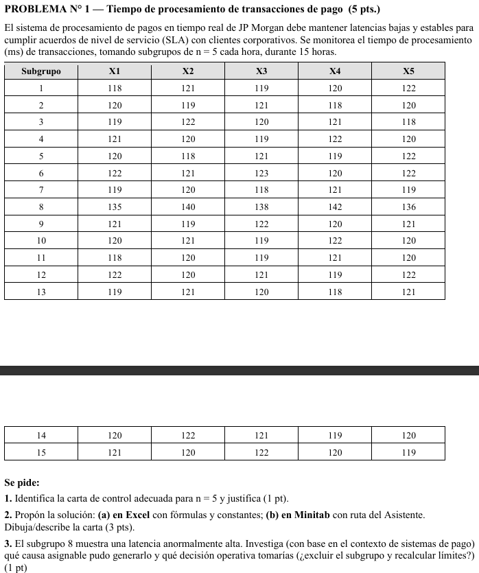
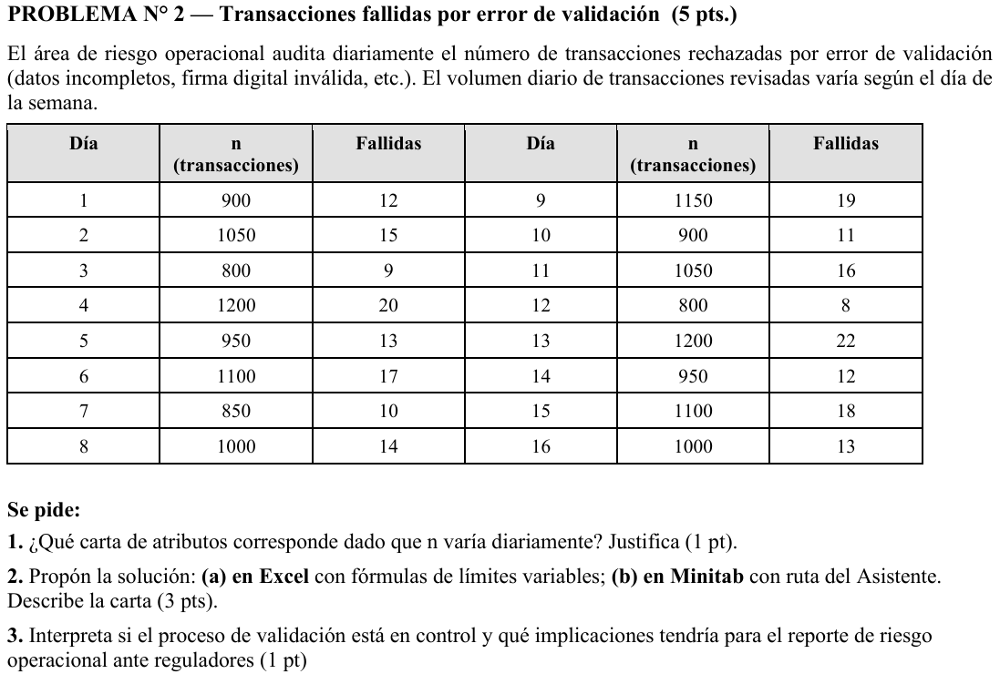
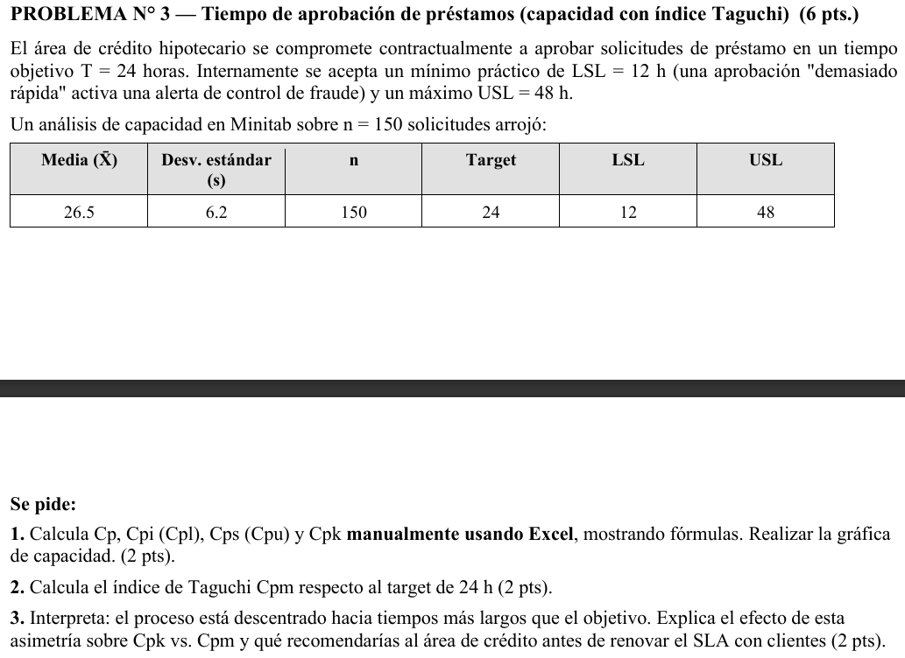

Descripción del problema
En el competitivo sector financiero, la velocidad de ejecución transaccional es un pilar fundamental para garantizar la satisfacción del cliente y evitar interrupciones masivas en la red. JP Morgan, una de las firmas financieras más importantes a nivel global, requiere monitorear continuamente el desempeño de su pasarela de pagos en tiempo real.
La característica de calidad crítica a evaluar es el tiempo de procesamiento (latencia), medido estrictamente en milisegundos (ms). Para asegurar un estado de control estadístico continuo, el equipo de ingeniería de datos extrae sistemáticamente muestras periódicas. Específicamente, cada hora se audita un subgrupo de n = 5 transacciones procesadas, recopilando los tiempos de respuesta para identificar cualquier variabilidad inusual o pico de latencia antes de que afecte a los usuarios finales.
Recorte Original del Enunciado

Identificación de la carta
Carta de control adecuada: Gráfica Xbarra-R
Justificación: La característica de calidad evaluada (tiempo de procesamiento medido en milisegundos) corresponde a una variable continua. Dado que el tamaño de los subgrupos recopilados es pequeño (n = 5, cumpliendo con el criterio metodológico de n ≤ 9), el rango (R) es el estadístico más robusto, eficiente y simple para estimar la variabilidad interna del proceso en comparación con la desviación estándar.
Desarrollo en Excel
Para estructurar la solución en Excel, se calculan el promedio (x̄) y el rango (R) para cada uno de los 15 subgrupos con las siguientes funciones:
- Promedio del subgrupo (x̄):
=PROMEDIO(X1:X5) - Rango del subgrupo (R):
=MAX(X1:X5) - MIN(X1:X5)
Gran Promedio (X̿) = 121.413 msRango Promedio (R̄) = 3.467 ms
A₂ = 0.577, D₄ = 2.114, D₃ = 0
LC = 121.413LCS = 121.413 + (0.577 × 3.467) = 123.414LCI = 121.413 - (0.577 × 3.467) = 119.413
LC = 3.467LCS = 2.114 × 3.467 = 7.329LCI = 0 × 3.467 = 0.000
Cálculo de Límites

Gráficos X̅-R Generados

Desarrollo en Minitab
- Seleccionar en la barra de menús superior: Asistente > Gráficas de control...
- En la sección de datos continuos, hacer clic en el botón Gráfica Xbarra-R.
- Configurar "¿Cómo están ordenados sus datos en la hoja de trabajo?" como: "Los datos se encuentran en múltiples columnas, una fila para cada subgrupo".
- En el recuadro "Columnas de datos", ingresar las variables de la X1 a la X5.
- En "¿Cómo determinará los límites de control y la línea central?", seleccionar "Estimar a partir de los datos".
- Hacer clic en Aceptar.
1. Reporte Resumen de Minitab

Interpretación: El reporte inicial confirma categóricamente que la media del proceso no es estable. El medidor visual revela que el 13.3% de los subgrupos están fuera de control, muy por encima del umbral seguro. Se identifican claramente los subgrupos anómalos 7 y 8, lo que requiere una investigación inmediata.
2. Reporte de Estabilidad

Interpretación: En el desglose de la gráfica, la Carta de Rangos (inferior) demuestra que la variabilidad interna de los subgrupos está bajo control. Sin embargo, en la Carta de Medias (superior), se valida visualmente el patrón de falla: el subgrupo 7 sufre una caída por debajo del límite inferior y el subgrupo 8 exhibe un pico severo de alta latencia, rompiendo abruptamente el límite superior de control.
3. Asistente Minitab (Diagnóstico)

Interpretación: La tarjeta de diagnóstico arroja múltiples alertas de color amarillo (precaución). Confirma el estado inestable (13.3% fuera vs. el 0.7% normal por azar) y señala una posible correlación en los datos de procesamiento de la pasarela, advirtiendo sobre las posibles falsas alarmas si no se omiten estadísticamente los subgrupos anómalos (causas asignables).
Interpretación de la Carta Obtenida
La gráfica de medias (X̄) muestra un proceso fuera de control estadístico. Se observa estabilidad generalizada en casi todos los puntos, excepto por dos anomalías detectadas por la Prueba 1 (Fuera de los límites de control):
- El Subgrupo 7 experimenta un sutil descenso por debajo del LCI (119.41).
- El Subgrupo 8 genera un pico severo y abrupto con una media de 138.20, superando críticamente el LCS (123.41).
La gráfica de rangos (R) se mantiene completamente bajo control (máximo valor de 7, por debajo del LCS = 7.33).
Conclusiones y Acciones
Proceso Fuera de Control
El subgrupo 8 presenta una latencia anormalmente alta (~138 ms frente al estándar de ~120 ms). Decision Operativa: Excluir el subgrupo 8 y recalcular los límites de control, ya que mantenerlo infla artificialmente la variabilidad de los límites.
Análisis de Causas Asignables (Subgrupo 8)
Al ser una pasarela transaccional (JP Morgan), este pico aislado de latencia puede atribuirse a causas especiales como:
- Saturación por Concurrencia Extrema: Ráfaga atípica y masiva de solicitudes que congestionó las colas de la base de datos.
- Degradación del Enlace de Red: Alta latencia en los canales con entidades validadoras (Visa/Mastercard).
- Procesos de Fondo Concurrentes: Tareas de mantenimiento o respaldos en caliente en el servidor durante esa hora.
Bibliografía e IA utilizada
Registro de Prompts (Ejercicio 1)
| Prompt Enviado | Objetivo | Respuesta de la IA | ¿Qué modifiqué? |
|---|---|---|---|
| "¿Cómo interpreto los límites fuera de control en una carta X-barra R para un sistema de pagos?" | Identificar causas tecnológicas de la variabilidad. | Sugerencias de saturación de red y picos de tráfico. | Adapté la explicación al contexto de JP Morgan. |
Anexo: Descarga de Recursos
Descripción del problema
En el monitoreo del control interno del sistema operativo, el área de riesgo operacional de una entidad financiera realiza auditorías diarias sobre las transacciones procesadas. El objetivo principal es identificar e investigar aquellas transacciones que fallan en la etapa crítica de validación de datos.
El volumen diario de transacciones inspeccionadas (n) varía dinámicamente según la operatividad de la pasarela y la demanda de los usuarios, oscilando en un rango de 800 a 1200 transacciones diarias. Se registra minuciosamente el número de transacciones fallidas con el fin de evaluar la estabilidad de la plataforma y asegurar que el nivel de error operativo se mantenga bajo control estadístico y dentro de los estándares regulatorios.
Recorte Original del Enunciado

Identificación de la carta
Carta de control adecuada: Gráfica p (Proporción de unidades defectuosas)
Justificación: La característica de calidad analiza unidades bajo una condición binaria y discreta (la transacción es aceptada o es rechazada/fallida por error de validación). Dado que el volumen diario de transacciones inspeccionadas (n) varía dinámicamente día a día, la gráfica np queda totalmente descartada ya que esta última exige un tamaño de subgrupo rigurosamente constante. Tampoco corresponden las cartas c o u debido a que estamos contabilizando el número total de unidades defectuosas, no el número de defectos por unidad de producto. Por lo tanto, la Gráfica p con límites de control variables es la única metodológicamente correcta.
Desarrollo en Excel
Para estructurar y automatizar la solución en el archivo P2.xlsx, se utiliza el total acumulado de las muestras y fallas registradas durante los 16 días para hallar la proporción media global (p̄):
p̄ = Σ Fallidas / Σ n = 229 / 16,000 = 0.0143125 (1.431% de error de validación)
Posteriormente, por cada día evaluado (fila i) donde nᵢ representa el tamaño de muestra de ese día específico, se aplican las siguientes funciones en Excel:
- Proporción diaria (pᵢ):
=Fallidas / n - Línea Central (LC):
=$I$3(celda absoluta que fija la proporción media global p̄ = 0.0143125) - Límite de Control Superior Variable (LCSᵢ):
=LC + 3 * RAIZ((LC * (1 - LC)) / n) - Límite de Control Inferior Variable (LCIᵢ):
=MAX(0; LC - 3 * RAIZ((LC * (1 - LC)) / n))
Total Fallidas = 229 transaccionesTotal Inspeccionadas = 16,000 transaccionesProporción Media Global (p̄) = 0.014313
Nivel de Sigmas = 3 (Confianza ~99.73%)Tamaño Muestra Promedio (n̄) = 1,000
Tabla de Cálculos y Gráfico p en Excel

Desarrollo en Minitab
- Seleccionar en la barra de menús superior: Asistente > Gráficas de control...
- En la sección inferior derecha (Datos de atributos), hacer clic en el botón Gráfica P.
- En el cuadro de diálogo configurar:
- Columna de elementos rechazados: Fallidas (C3).
- Tamaño de los subgrupos: Seleccionar "Columna de tamaños de subgrupos" e ingresar n (C2).
- ¿Cómo determinará los límites de control?: Seleccionar "Estimar a partir de los datos".
- Al hacer clic en Aceptar, presionar "No" ante el aviso de dispersión insuficiente para mantener la Gráfica p convencional solicitada y visualizar el reporte.
1. Reporte Resumen de Minitab

Interpretación: El reporte resumen del Asistente confirma de manera concluyente que la proporción de elementos defectuosos es **estable** y bajo control. El medidor visual de estabilidad revela que el **0.0% de los subgrupos están fuera de control**, lo que demuestra la estabilidad a largo plazo del proceso informático de validación transaccional con una tasa de error media de **1.43%**.
2. Reporte de Diagnóstico

Interpretación: El reporte de diagnóstico analiza la sobredispersión o subdispersión de los datos binomiales. Indica que la variación observada de las proporciones es ligeramente menor a la esperada (subdispersión), lo que significa que los límites de control calculados de forma convencional son amplios y seguros. Minitab descarta la necesidad de utilizar una carta de Laney P, confirmando que la Carta p clásica es perfectamente válida.
3. Informe de Estabilidad (Carta p Variable)

Interpretación: La gráfica del Asistente muestra visualmente el comportamiento diario de las proporciones de errores. La línea central de color verde se mantiene fija en 0.014313. Los límites de control superior (LCS) e inferior (LCI) de color rojo no son líneas rectas, sino que adoptan una forma de escalón debido a la variación de n. Los límites se estrechan en los días con mayor volumen transaccional (ej. Días 4 y 13 con n=1200) y se ensanchan en los días con menor volumen (ej. Días 3 y 12 con n=800). Ninguno de los 16 puntos de proporciones diarias toca o excede los límites, confirmando que el proceso está en control.
Interpretación de la Carta Obtenida
El proceso de validación transaccional se encuentra en un **estado de control estadístico estable y predecible**. Toda la variación observada a lo largo de los 16 días evaluados es producto exclusivo de causas comunes o fluctuaciones aleatorias normales inherentes a la infraestructura actual del sistema. No se observa presencia de causas especiales de variación (puntos fuera de los límites de control ni patrones atípicos como rachas o tendencias continuas).
La variabilidad escalonada de los límites de control refleja adecuadamente el ajuste matemático según el volumen del día, estrechándose cuando hay mayor cantidad de transacciones por procesar y ensanchándose cuando el volumen es menor.
Conclusiones y Riesgo Operacional
Proceso bajo Control
El proceso de validación es estable con una tasa media de error del 1.43%. Al estar todos los subgrupos en control, se descartan incidentes graves en la operación diaria del software.
Implicaciones ante Reguladores (SBS) y Acciones
Para la Superintendencia de Banca, Seguros y AFP (SBS) y los equipos de riesgo operacional de la entidad financiera, este análisis representa un indicador muy favorable:
- Evidencia de Robustez de Controles: Demuestra que el área de riesgo operacional posee un monitoreo estadístico maduro y que la tasa promedio de errores de validación (~1.43%) está acotada y bajo estricta supervisión.
- Sustento Científico para Auditorías: Funciona como una línea base objetiva. Si el regulador solicitara reducir este porcentaje de transacciones fallidas en el futuro, la gráfica demuestra que el proceso ya es estable, por lo que la única manera de bajar ese 1.43% no es presionando al personal, sino invirtiendo en el rediseño y una mayor automatización de la infraestructura tecnológica de validación.
Bibliografía e IA utilizada
Registro de Prompts (Ejercicio 2)
| Prompt Enviado | Objetivo | Respuesta de la IA | ¿Qué modifiqué? |
|---|---|---|---|
| "¿Cómo calcular los límites de control variables para una gráfica p en Excel cuando el tamaño de muestra varía?" | Estructurar las fórmulas dinámicas en Excel. | Uso de la función RAIZ fijando el promedio p-barra global. | Apliqué la fórmula en la plantilla solucion.xlsx. |
Anexo: Descarga de Recursos
Descripción del problema
En una institución financiera, se desea evaluar la capacidad del proceso de aprobación de préstamos personales. La característica de calidad crítica es el tiempo de aprobación (en horas).
Especificaciones Técnicas:
• Límite de Especificación Inferior (LSL): 12 horas
• Valor Nominal o Meta (Target): 24 horas
• Límite de Especificación Superior (USL): 48 horas
Se tomó una muestra de 150 préstamos, donde se determinó una media poblacional estimada de 26.5 horas y una desviación estándar de 6.2 horas. El objetivo es analizar los índices de capacidad tradicionales (Cp, Cpk) y el índice de Taguchi (Cpm) para emitir un veredicto sobre la idoneidad del proceso.
Interpretación del Enunciado:
Se evalúa si el sistema actual puede aprobar créditos dentro de la franja de tiempo prometida al cliente (12 a 48 h). Al usar el índice Cpm (Taguchi), se penalizará fuertemente cualquier desviación respecto al tiempo ideal (Target = 24h), buscando no solo estar dentro de los límites, sino centrar la calidad en el valor óptimo.

Identificación de la técnica
Justificación Técnica de Selección:
- Naturaleza del dato: Variable cuantitativa continua (Tiempo de aprobación medido en horas).
- Supuesto del modelo: Los tiempos se modelan bajo una distribución de probabilidad Normal.
- Razón de uso: A diferencia de una carta de control gráfica que solo evalúa estabilidad a lo largo del tiempo, el análisis de capacidad contrasta la variabilidad natural del proceso contra los límites de especificación (LSL, USL) establecidos por la empresa. Además, la aplicación del índice Cpm (Taguchi) permite considerar el desplazamiento de la media respecto al valor nominal u objetivo (Target).
¿Qué está pasando en el Proceso? (Diagnóstico)
En Excel: Se realiza el cálculo analítico exacto determinando que el índice Cp = 0.97 y Cpm = 0.90, ambos por debajo del criterio de aceptación mínima (1.00).
En Minitab: El reporte visual arroja campanas de Gauss desplazadas hacia el límite superior. Múltiples métricas aparecen en categoría "Marginal" o "Inadecuada", indicando riesgo de generar tiempos de espera inaceptables para el cliente.
Desarrollo en Excel
Fórmulas e Índices de Capacidad
Se evalúa la capacidad del proceso considerando la distancia entre los límites de especificación y la desviación de la media frente al valor objetivo:
Índice de Capacidad Potencial (Cp)
Cp = (USL - LSL) / (6 * σ)
Compara la tolerancia permitida con la variación real. Cp = (48 - 12) / (6 * 6.2) = 0.9677
Índice de Taguchi (Cpm)
Cpm = (USL - LSL) / (6 * √(σ² + (μ - Target)²))
Penaliza el descentrado respecto al valor nominal. Cpm = 36 / (6 * 6.69) = 0.8975

Fórmulas y Estructura en Excel
En la hoja de Excel se formularon los índices de capacidad clásicos (Cp, Cpk, Cps, Cpi).
El cálculo del índice de Taguchi requiere previamente calcular la constante Tau (τ), que representa la raíz cuadrada de la suma de la varianza poblacional ($\sigma^2$) y el cuadrado del descentramiento $(\mu - Target)^2$. Al estar la media en 26.5 y el Target en 24, existe un claro descentramiento que empeora el índice final a 0.8975, declarándolo como un proceso NO APTO (menor a 1.00).
Desarrollo en Minitab
Informe de Capacidad del Proceso (Capacidad Normal)

Interpretación: El informe de capacidad normal generado por Minitab revela el desempeño del proceso de tiempos de aprobación ($N=150$). Se observa que el histograma con el ajuste normal está notablemente desviado hacia la derecha de la línea objetivo (Target = 24.0 horas), con una media real de 26.5 horas y una desviación estándar de 6.2 horas.
Los índices de capacidad confirman de forma contundente la deficiencia del proceso:
- El índice de capacidad potencial Cp = 0.97 (menor al mínimo de 1.00) indica que la variabilidad natural del proceso ($\pm 3\sigma$) supera la tolerancia total permitida de especificaciones (12 a 48 horas).
- El índice de capacidad real de corto plazo Cpk = 0.78 refleja el empeoramiento causado por el descentrado de la media hacia el límite superior de especificación.
- El índice de Taguchi Cpm = 0.90 confirma formalmente que el proceso no es apto (valor < 1.00) debido al castigo cuadrático aplicado por la desviación del promedio respecto al Target de 24 horas.
Interpretación
Conclusiones
Proceso Desviado
El promedio de tiempo de aprobación (26.5h) se desvía considerablemente del valor óptimo de 24.0h, acercándose peligrosamente al límite superior permitido. Esto impacta drásticamente el índice de Taguchi, el cual penaliza la falta de centralidad de la calidad.
Plan de Acción Correctiva
1. Análisis de Cuellos de Botella: Identificar y eliminar retrasos burocráticos en las fases de aprobación de créditos para reducir la media (centrar el proceso).
2. Reducción de Variabilidad: Estandarizar los criterios de evaluación financiera, ya que la desviación estándar de 6.2 horas es excesiva e induce un $C_p < 1$.
Bibliografía e IA utilizada
Registro de Prompts (Ejercicio 3)
| Prompt Enviado | Objetivo | Respuesta de la IA | ¿Qué modifiqué? | Reflexión Personal |
|---|---|---|---|---|
| "Desarrolla el análisis de capacidad normal de un proceso con T=24, LSL=12, USL=48, media=26.5 y std=6.2. Calcula Cpm." | Validar los resultados teóricos de capacidad y el índice Taguchi. | Proporcionó el cálculo exacto de Tau y la sustitución paso a paso en la fórmula matemática. | Adapté los formatos y precisiones decimales a los solicitados en la plantilla. | La IA es indispensable para visualizar geométricamente el impacto del descentrado en el índice Cpm y sus diferencias con Cpk. |
| "Escribe código en Python con Matplotlib para dibujar una gráfica similar a la Capability Sixpack de Minitab." | Obtener gráficos equivalentes para contrastar. | Generó código completo dibujando histogramas, umbrales y gráfica Q-Q. | Ajusté las variables a los límites de nuestro problema y los colores de la gráfica. | Emular Minitab programáticamente refuerza el entendimiento paramétrico de lo que el software de caja negra está calculando. |
Anexo: Descarga de Recursos
Descripción del problema
Interpretación del Enunciado:
Escriba la interpretación física de las variables de este ejercicio y el objetivo de la prueba.
| Subgrupo | X1 | X2 | X3 | X4 | X5 |
|---|---|---|---|---|---|
| 1 | 0.00 | 0.00 | 0.00 | 0.00 | 0.00 |
| 2 | 0.00 | 0.00 | 0.00 | 0.00 | 0.00 |
| 3 | 0.00 | 0.00 | 0.00 | 0.00 | 0.00 |

Identificación de la carta
Justificación Técnica de Selección:
- Naturaleza del dato: (Ej. Variable continua cuantitativa o Atributos cualitativos)
- Tamaño de subgrupo: (Ej. n = _VAL_ ≤ 8 o n > 8)
- Razón de uso: (Describa por qué se eligió esta carta según la teoría estadística).
¿Qué está pasando en el Proceso? (Diagnóstico)
En Excel: (Describa detalladamente el comportamiento observado en los gráficos de Excel: límites calculados, puntos inestables o tendencias fuera de límites).
En Minitab: (Detalle el diagnóstico del Asistente de Minitab: porcentaje de subgrupos inestables, alertas rojas y si la variación o el promedio son estables).
Desarrollo en Excel
Fórmulas y Parámetros
Cálculos analíticos aplicados en la hoja de Excel:
Línea Central (CL)
Media del Proceso
Valor promedio general de la característica de calidad.
Límites de Control (UCL / LCL)
CL ± 3σ
Límites calculados con las constantes estadísticas oficiales.
| Subgrupo | Valor Promedio X̅ | Dispersión R/S | Estado Media | Estado Dispersión |
|---|---|---|---|---|
| Muestra 1 | 0.00 | 0.00 | En Control | En Control |
| Muestra 2 | 0.00 | 0.00 | En Control | En Control |
Detalles de Auditoría (Ex4)
.jpeg)
Fórmulas y Estructura en Excel
(Describa el uso de fórmulas y referencias de celdas en la hoja Excel. Por ejemplo, la aplicación de PROMEDIO, MAX, MIN para calcular los límites de control de forma dinámica en base a las constantes del subgrupo).
Desarrollo en Minitab

Diagnóstico e Informes del Proceso
Coloque aquí el reporte de estabilidad generado por el software especializado Minitab. Describa las alarmas o advertencias de inestabilidad arrojadas en la carta de control.
Interpretación
Conclusiones
Conclusión Clave
Veredicto estadístico sobre el proceso.
Plan de Acción Correctiva
Describa las acciones de ingeniería recomendadas en planta para este ejercicio.
Bibliografía e IA utilizada
Registro de Prompts (Ejercicio 4)
| Prompt Enviado | Objetivo | Respuesta de la IA | ¿Qué modifiqué? | Reflexión Personal |
|---|---|---|---|---|
| - | - | - | - | - |